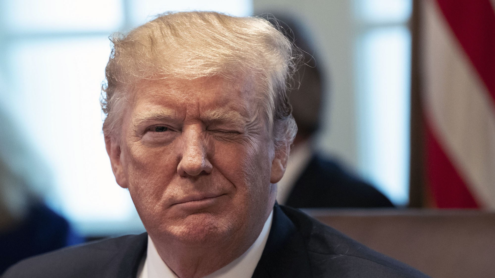

September 23, 2019
Trump denies he sought Ukrainian probe of Biden and his family in return for U.S. military aid
NEW YORK — President Trump denied Monday that he had offered military aid to the president of Ukraine only if the country launched a probe into former vice ...
The Washington Post
15 minutes ago
Giuliani accuses Ukraine of laundering $3M to Hunter Biden, asks how Obama could let that happen
Rudy Giuliani channeled President Trump Monday with a wee-hours Twitter blitz aimed at turning the Ukraine story currently roiling Washington into a big ...
Fox News
9 hours ago
Bill Weld suggests Trump could face execution over Ukraine phone call
Former Massachusetts Gov. Bill Weld, who is challenging President Trump in the Republican primaries, proclaimed Monday that the president committed ...
Fox News
4 hours ago
Column: Trump pulls ‘reverse-Nixon’ over Ukraine call: ‘I AM A CROOK!’
As expected, liberals spent most of the weekend screaming “IMPEACH!” over news that President Donald Trump had again done something that is likely an ...
Chicago Tribune
4 hours ago
Opinion
Trump’s Ukraine Call Runs Some Impeachment Traps
The president apparently learned nothing from the Mueller investigation. He could clear things up by releasing the transcript of his call to Zelensky about Biden.
Bloomberg
9 hours ago
Opinion
Fox News 4 hours ago Column: Trump pulls ‘reverse-Nixon’ over Ukraine call: ‘I AM A CROOK!’ As expected, liberals spent most of the weekend screaming “IMPEACH!” over news that President Donald Trump had again done something that is likely an ... Chicago Tribune 4 hours ago Opinion Trump’s Ukraine Call Runs Some Impeachment Traps The president apparently learned nothing from the Mueller investigation. He could clear things up by releasing the transcript of his call to Zelensky about Biden. Bloomberg 9 hours ago Opinion
